🐟 80 Loài Cá (Nước ngọt & Nước mặn) 🐠
🐟 Cá nước ngọt (1–40)
1. Cá chép (Carp)
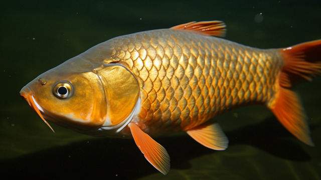Thức ăn: Tảo, rong, côn trùng nhỏ, hạt thực vật.
Tập tính: Hiền lành, sống theo đàn, thích vùng nước yên tĩnh.
Sinh sản: Đẻ trứng vào mùa xuân, mỗi lần hàng ngàn trứng.
Nơi ở: Ao hồ, sông suối nước chảy chậm.
2. Cá rô phi (Tilapia)
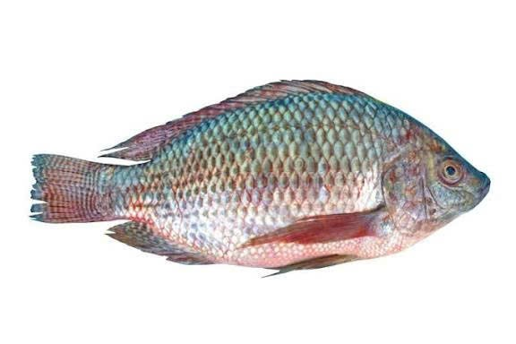Thức ăn: Rong tảo, cám, sinh vật phù du.
Tập tính: Sống theo đàn, dễ thích nghi nhiều môi trường nước.
Sinh sản: Đẻ trứng và ấp miệng, con non được bảo vệ kỹ.
Nơi ở: Ao, hồ, sông nước ấm, vùng nhiệt đới.
3. Cá trê (Catfish)

Thức ăn: Động vật đáy, cá nhỏ, giáp xác, thức ăn thừa.
Tập tính: Sống tầng đáy, hoạt động mạnh về đêm.
Sinh sản: Đẻ trứng trong hang hoặc tổ bùn, cha mẹ canh giữ trứng.
Nơi ở: Ao tù, sông, ruộng ngập nước.
4. Cá lóc (Snakehead)
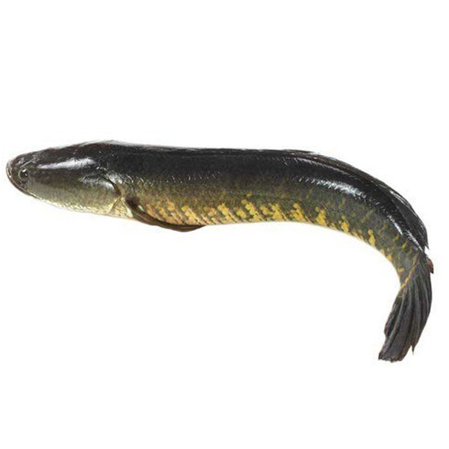Thức ăn: Cá nhỏ, ếch, côn trùng, tôm tép.
Tập tính: Dữ, sống đơn lẻ, săn mồi mạnh mẽ.
Sinh sản: Làm tổ cỏ nổi, cha mẹ bảo vệ con non.
Nơi ở: Đầm, ruộng, hồ nước ngọt có nhiều cỏ.
5. Cá rô đồng (Anabas)
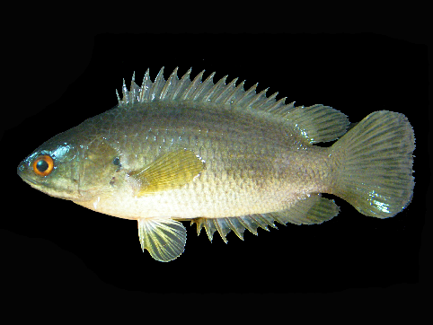Thức ăn: Côn trùng, giáp xác nhỏ, sinh vật phù du.
Tập tính: Có thể bò lên cạn khi thiếu oxy, rất khỏe.
Sinh sản: Đẻ trứng mùa mưa, trứng nổi trên mặt nước.
Nơi ở: Ruộng lúa, ao hồ nông, mương nước.
6. Cá bảy màu (Guppy)
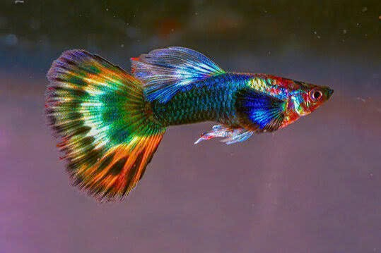Thức ăn: Tảo, sinh vật phù du nhỏ, thức ăn mịn.
Tập tính: Hiền, nhiều màu sắc, sống theo đàn nhỏ.
Sinh sản: Đẻ con, sinh sản quanh năm.
Nơi ở: Hồ cảnh, suối nhỏ, bể cá cảnh.
7. Cá trắm cỏ (Grass carp)

Thức ăn: Thực vật thủy sinh, rong cỏ.
Tập tính: Hiền, lớn nhanh, di chuyển theo đàn.
Sinh sản: Đẻ trứng nổi trong dòng nước chảy mạnh.
Nơi ở: Sông lớn, hồ chứa, ao nuôi.
8. Cá diếc (Crucian carp)
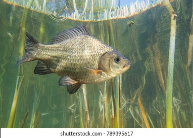Thức ăn: Sinh vật phù du, tảo, vụn hữu cơ.
Tập tính: Hiền, chịu lạnh tốt, sống tầng giữa và đáy.
Sinh sản: Đẻ trứng dính trên cây thủy sinh.
Nơi ở: Ao hồ yên tĩnh, sông nhỏ.
9. Cá chạch (Loach)
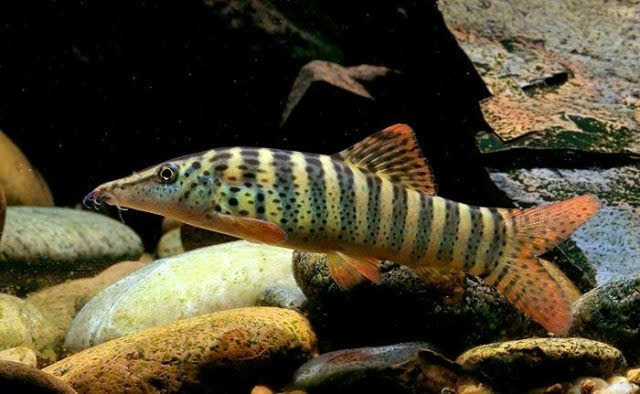Thức ăn: Giun, ấu trùng, sinh vật nhỏ dưới đáy.
Tập tính: Thích đào bùn, trốn khi có nguy hiểm.
Sinh sản: Đẻ trứng vào mùa mưa, trứng dính vào đá và cỏ.
Nơi ở: Đầm, ruộng, sông nhỏ có bùn mềm.
10. Cá tra (Pangasius)
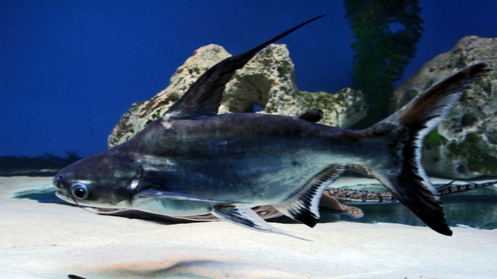Thức ăn: Cám, cá nhỏ, tảo, mùn bã hữu cơ.
Tập tính: Hiền, sống tầng giữa và đáy, bơi chậm.
Sinh sản: Đẻ trứng nổi theo dòng nước sông Mekong.
Nơi ở: Sông Mekong, sông lớn nước ấm.
11. Cá tai tượng (Giant Gourami)
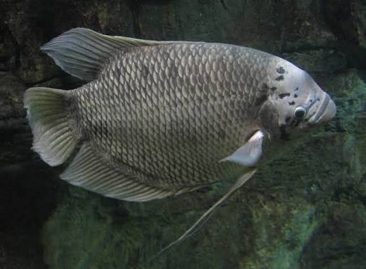Thức ăn: Thực vật thủy sinh, rong, tảo.
Tập tính: Hiền lành, thích bơi chậm ở vùng nước yên tĩnh.
Sinh sản: Làm tổ bằng bọt khí; cá đực bảo vệ trứng.
Nơi ở: Ao, hồ, sông nhỏ Đông Nam Á.
12. Cá chép Koi (Koi Carp)
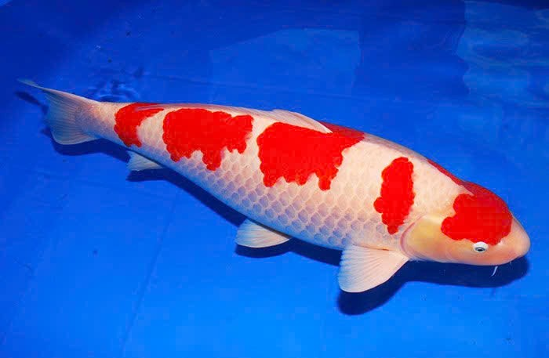Thức ăn: Cám, rong, tảo, giáp xác nhỏ.
Tập tính: Dễ nuôi, thân thiện, bơi theo đàn.
Sinh sản: Đẻ trứng dính lên rong hoặc đá.
Nơi ở: Ao cảnh, hồ nuôi nhân tạo.
13. Cá vàng (Goldfish)

Thức ăn: Cám viên, trùn chỉ, tảo.
Tập tính: Thân thiện, thích bơi chậm trong bể nước sạch.
Sinh sản: Đẻ trứng; nở sau 3–4 ngày.
Nơi ở: Hồ, bể cá cảnh.
14. Cá neon (Neon Tetra)

Thức ăn: Cám nhỏ, tảo, sinh vật li ti.
Tập tính: Sống theo đàn, hiền hòa, ưa nước sạch.
Sinh sản: Đẻ trứng nhỏ, cần ánh sáng yếu.
Nơi ở: Sông Amazon, Nam Mỹ.
15. Cá dĩa (Discus)
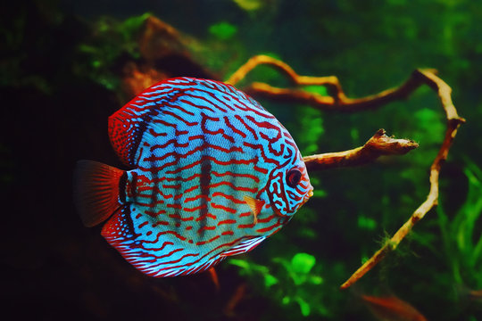Thức ăn: Trùn chỉ, cám, giáp xác nhỏ.
Tập tính: Sống theo nhóm nhỏ, khá nhạy cảm với môi trường.
Sinh sản: Đẻ trứng trên bề mặt phẳng; cả bố mẹ chăm con.
Nơi ở: Vùng nước tĩnh Nam Mỹ.
16. Cá bống tượng (Marble Goby)

Thức ăn: Cá con, tôm nhỏ.
Tập tính: Sống đáy, ẩn nấp, săn mồi chậm rãi.
Sinh sản: Cá cái đẻ trứng, cá đực bảo vệ tổ.
Nơi ở: Sông hồ Việt Nam, Campuchia.
17. Cá trắm đen (Black Carp)

Thức ăn: Ốc, hến, giáp xác.
Tập tính: Ăn đáy, bơi chậm, thân lớn.
Sinh sản: Đẻ trứng nổi vào mùa mưa.
Nơi ở: Sông lớn, ao nuôi đồng bằng.
18. Cá sặc rằn (Snakeskin Gourami)

Thức ăn: Cám, rong, sinh vật nhỏ.
Tập tính: Hiền, dễ nuôi, ưa nước tĩnh.
Sinh sản: Làm tổ bọt, cá đực canh trứng.
Nơi ở: Ao hồ, ruộng nước.
19. Cá heo nước ngọt (Irrawaddy Dolphin)

Thức ăn: Cá nhỏ, tôm.
Tập tính: Sống theo nhóm nhỏ, thân thiện.
Sinh sản: Đẻ con, chăm sóc kỹ.
Nơi ở: Sông Mê Kông, sông Ayeyarwady.
20. Cá trê phi (African Catfish)

Thức ăn: Côn trùng, cá nhỏ, thức ăn viên.
Tập tính: Ăn đêm, hiếu động, chịu được thiếu oxy.
Sinh sản: Đẻ trứng vào mùa mưa; cá đực bảo vệ tổ.
Nơi ở: Ao hồ châu Phi, nuôi phổ biến tại Việt Nam.
31. Cá bảy màu rừng (Endler’s Guppy)

Thức ăn: Cám mịn, trùn chỉ, tảo.
Tập tính: Sống theo đàn nhỏ, thân thiện.
Sinh sản: Đẻ con, dễ sinh sản trong bể.
Nơi ở: Hồ nước ngọt Nam Mỹ.
32. Cá mún (Platy)

Thức ăn: Thực vật nhỏ, cám viên.
Tập tính: Hiền, sống theo đàn, ưa nước ấm.
Sinh sản: Đẻ con, phát triển nhanh.
Nơi ở: Trung Mỹ, bể cá cảnh.
33. Cá molly (Molly)
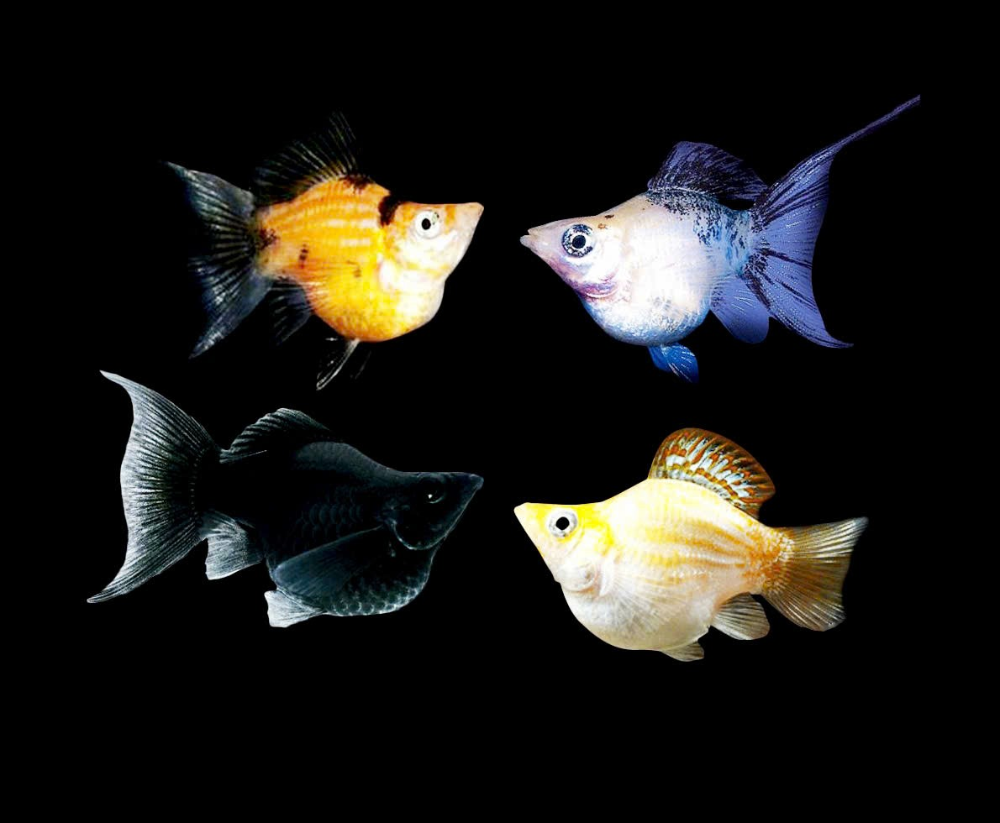Thức ăn: Rong rêu, cám, trùn chỉ.
Tập tính: Sống bầy đàn, thích ánh sáng nhẹ.
Sinh sản: Đẻ con, dễ nuôi.
Nơi ở: Hồ, ao nước tĩnh.
34. Cá trâm (Zebra Danio)

Thức ăn: Sinh vật nhỏ, cám mịn.
Tập tính: Nhanh nhẹn, sống theo đàn.
Sinh sản: Đẻ trứng, nở nhanh.
Nơi ở: Sông suối Nam Á.
35. Cá dứa nước ngọt (Striped Catfish)

Thức ăn: Cám, tôm nhỏ, cá con.
Tập tính: Sống tầng đáy, bơi theo đàn lớn.
Sinh sản: Đẻ trứng nổi mùa mưa.
Nơi ở: Sông Mekong, Việt Nam.
36. Cá nheo (Bullhead Catfish)

Thức ăn: Động vật nhỏ, giáp xác.
Tập tính: Ăn đêm, sống đáy, săn mồi.
Sinh sản: Cá đực bảo vệ trứng.
Nơi ở: Hồ và sông Bắc Mỹ.
37. Cá rô phi đỏ (Red Tilapia)

Thức ăn: Cám, rong tảo, sinh vật nhỏ.
Tập tính: Hiền, dễ nuôi, sống đàn.
Sinh sản: Đẻ trứng trong miệng cá cái.
Nơi ở: Ao nuôi nước ngọt.
38. Cá trắm cỏ trắng (White Grass Carp)

Thức ăn: Cỏ tươi, rong, thực vật thủy sinh.
Tập tính: Hiền lành, ăn mạnh.
Sinh sản: Đẻ trứng nổi theo dòng nước.
Nơi ở: Sông lớn, hồ nuôi.
39. Cá hồng nhung (Rosy Barb)

Thức ăn: Tảo, cám viên, giáp xác nhỏ.
Tập tính: Thân thiện, bơi theo đàn nhỏ.
Sinh sản: Đẻ trứng, cần nước sạch.
Nơi ở: Ấn Độ, hồ cảnh.
40. Cá bống cát (Sand Goby)

Thức ăn: Ấu trùng, giáp xác nhỏ.
Tập tính: Sống đáy, thích ẩn nấp trong cát.
Sinh sản: Đẻ trứng dính lên đá hoặc cát.
Nơi ở: Hồ, sông nhỏ Việt Nam.
🦈 Nước mặn(1-40)
1. Cá hề (Clownfish)
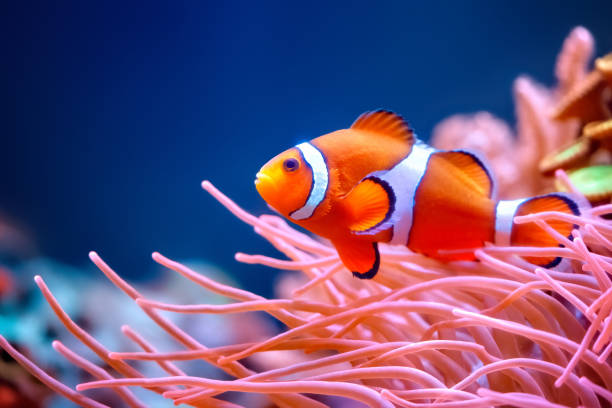Thức ăn: Tảo, động vật phù du, vụn thức ăn nhỏ.
Tập tính: Sống cộng sinh với hải quỳ, hiền lành.
Sinh sản: Đẻ trứng trên đá gần hải quỳ.
Nơi ở: Rạn san hô vùng nhiệt đới.
2. Cá đuối (Stingray)
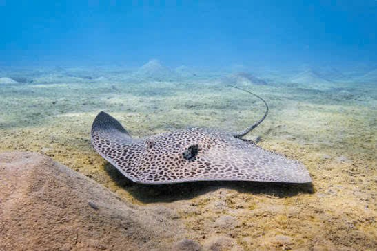Thức ăn: Giáp xác, nhuyễn thể dưới đáy biển.
Tập tính: Sống đáy, có gai độc ở đuôi.
Sinh sản: Đẻ con, nuôi phôi trong cơ thể.
Nơi ở: Biển nông, vùng cát mềm.
3. Cá mập (Shark)
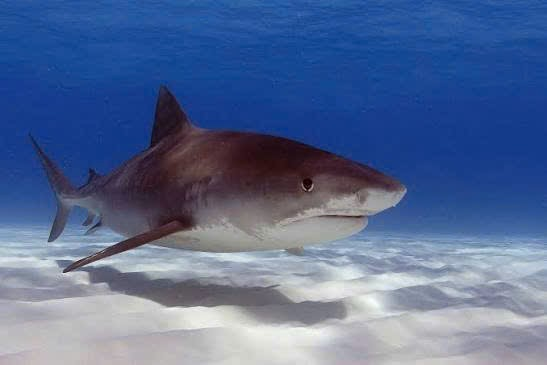Thức ăn: Cá nhỏ, hải cẩu, mực.
Tập tính: Săn mồi đơn lẻ, mạnh mẽ, hung dữ.
Sinh sản: Đẻ con hoặc trứng tùy loài.
Nơi ở: Đại dương sâu, khắp thế giới.
4. Cá heo (Dolphin)
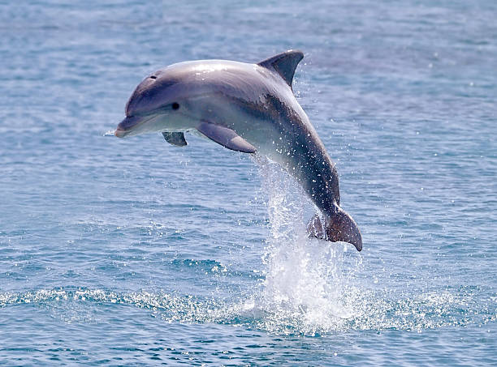Thức ăn: Cá nhỏ, mực, tôm biển.
Tập tính: Thông minh, sống bầy đàn, thân thiện.
Sinh sản: Đẻ con, chăm sóc con non.
Nơi ở: Biển nhiệt đới và ôn đới.
5. Cá ngựa (Seahorse)
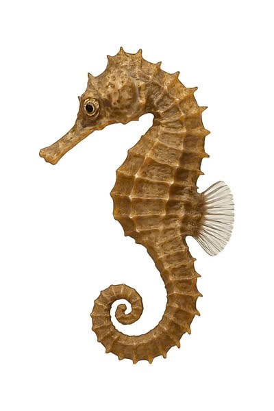Thức ăn: Sinh vật phù du, tôm nhỏ.
Tập tính: Bơi chậm, bám vào rong biển.
Sinh sản: Con đực mang trứng trong túi.
Nơi ở: Rạn san hô, thảm rong biển.
6. Cá nóc (Pufferfish)
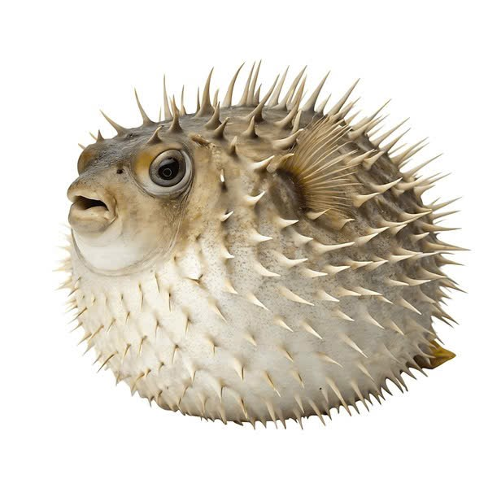Thức ăn: Giáp xác, san hô mềm, ốc nhỏ.
Tập tính: Tự phồng mình khi bị đe dọa.
Sinh sản: Đẻ trứng, nở sau vài ngày.
Nơi ở: Biển nhiệt đới và ôn đới.
7. Cá chim biển (Pomfret)
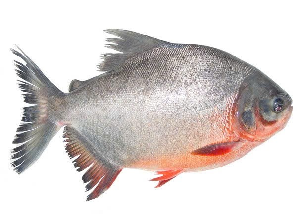Thức ăn: Cá nhỏ, tôm, sinh vật nổi.
Tập tính: Sống đàn, bơi nhanh.
Sinh sản: Đẻ trứng nổi ngoài khơi.
Nơi ở: Biển ấm vùng nhiệt đới.
8. Cá thu (Mackerel)
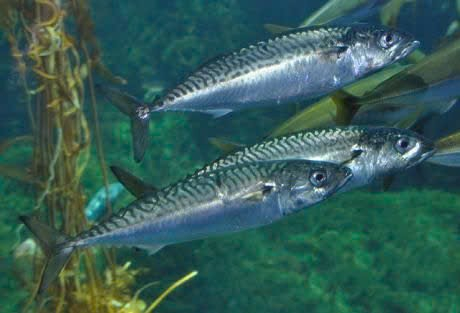Thức ăn: Cá nhỏ, mực, sinh vật nổi.
Tập tính: Bơi đàn lớn, di cư theo mùa.
Sinh sản: Đẻ trứng nổi trên mặt nước.
Nơi ở: Đại dương nhiệt đới và ôn đới.
9. Cá ngừ (Tuna)
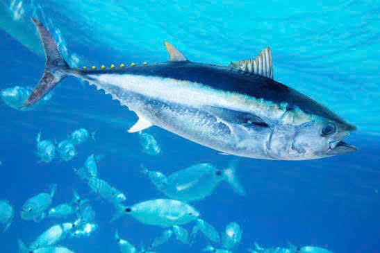Thức ăn: Cá nhỏ, mực, giáp xác.
Tập tính: Di chuyển nhanh, săn theo đàn.
Sinh sản: Đẻ trứng nổi, số lượng lớn.
Nơi ở: Đại dương khắp thế giới.
10. Cá mú (Grouper)
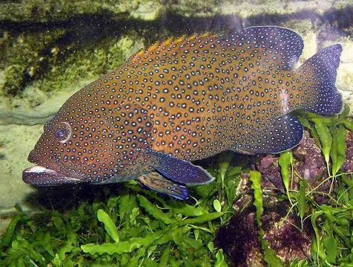Thức ăn: Cá nhỏ, cua, tôm.
Tập tính: Sống đáy, săn mồi phục kích.
Sinh sản: Lưỡng tính, đẻ trứng trong bãi đá.
Nơi ở: Rạn san hô, vùng nước nông.
11. Cá đuôi gai (Surgeonfish)

Thức ăn: Tảo biển, sinh vật nhỏ.
Tập tính: Hiền, có gai sắc ở đuôi để tự vệ.
Sinh sản: Đẻ trứng ngoài khơi.
Nơi ở: Vùng rạn san hô.
12. Cá bướm (Butterflyfish)
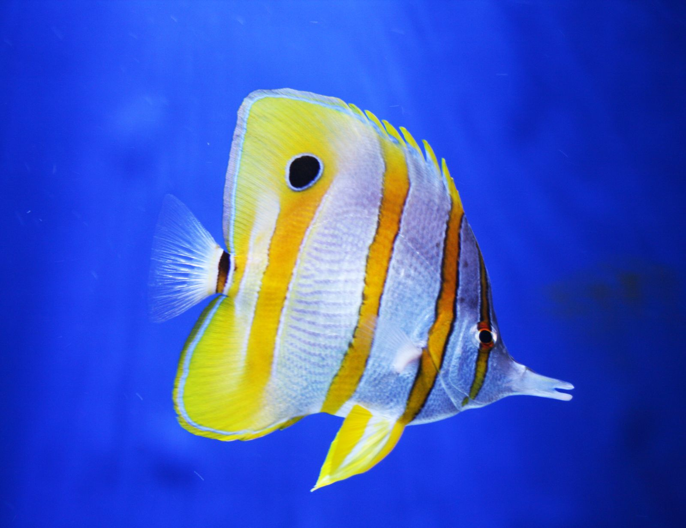Thức ăn: Tảo, san hô nhỏ, giáp xác li ti.
Tập tính: Sống cặp đôi, bơi quanh rạn san hô.
Sinh sản: Đẻ trứng trôi nổi.
Nơi ở: Biển ấm, khu vực rạn san hô.
13. Cá hoàng đế (Emperor Angelfish)
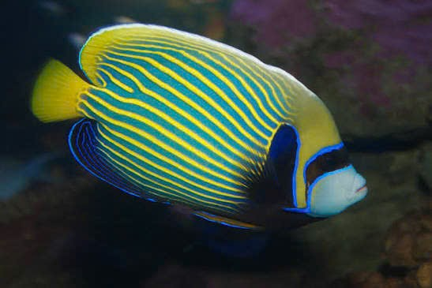Thức ăn: Tảo, san hô mềm.
Tập tính: Lộng lẫy, lãnh thổ mạnh.
Sinh sản: Đẻ trứng nổi.
Nơi ở: San hô Ấn Độ Dương và Thái Bình Dương.
14. Cá mao tiên (Lionfish)
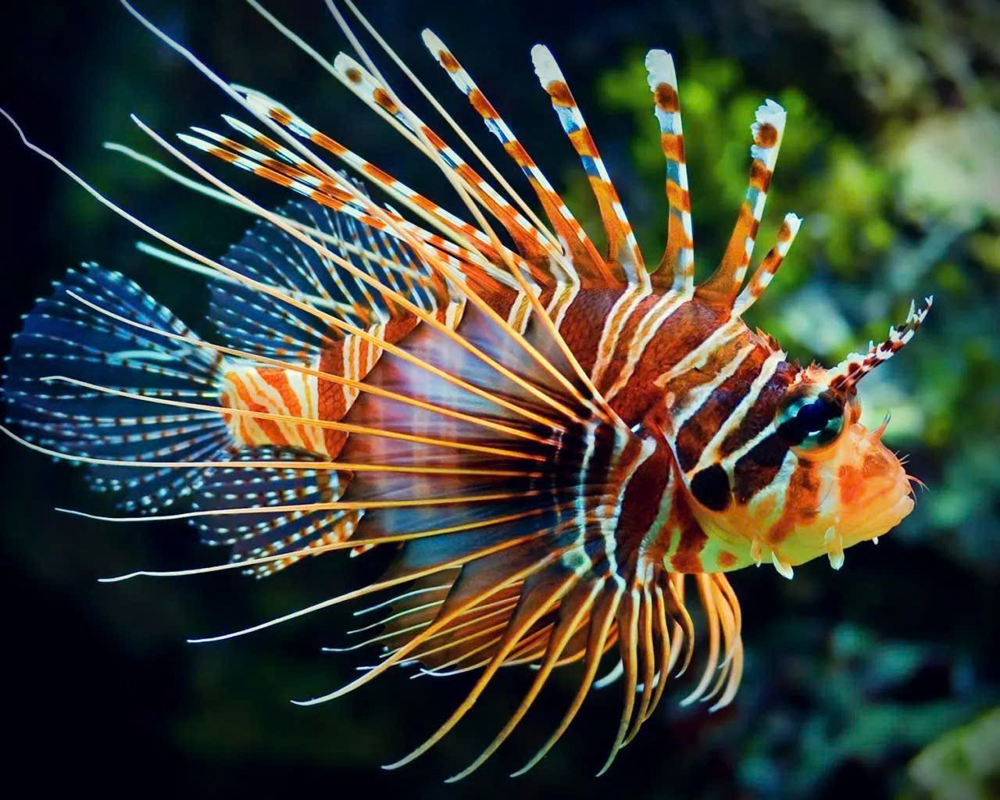Thức ăn: Cá nhỏ, giáp xác.
Tập tính: Có gai độc, bơi chậm.
Sinh sản: Đẻ trứng, trôi nổi trong nước.
Nơi ở: Rạn san hô, vùng nước ấm.
15. Cá hồng (Red Snapper)
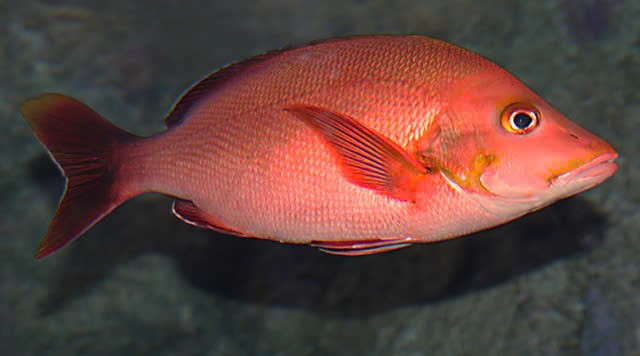Thức ăn: Cá nhỏ, tôm, mực.
Tập tính: Sống gần đáy, săn mồi linh hoạt.
Sinh sản: Đẻ trứng nổi xa bờ.
Nơi ở: Biển ấm Đại Tây Dương, Thái Bình Dương.
16. Cá hanh (Silver Grunt)
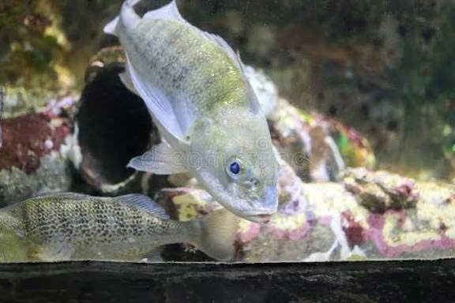Thức ăn: Tôm nhỏ, côn trùng biển.
Tập tính: Bơi đàn, sống tầng giữa.
Sinh sản: Đẻ trứng theo mùa.
Nơi ở: Ven biển và rạn đá.
17. Cá đổng (Threadfin Bream)
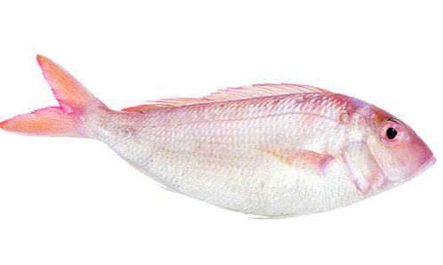Thức ăn: Cá nhỏ, động vật không xương.
Tập tính: Bơi đàn nhỏ, ưa nước trong.
Sinh sản: Đẻ trứng nổi.
Nơi ở: Vùng biển Việt Nam và Đông Nam Á.
18. Cá cơm (Anchovy)
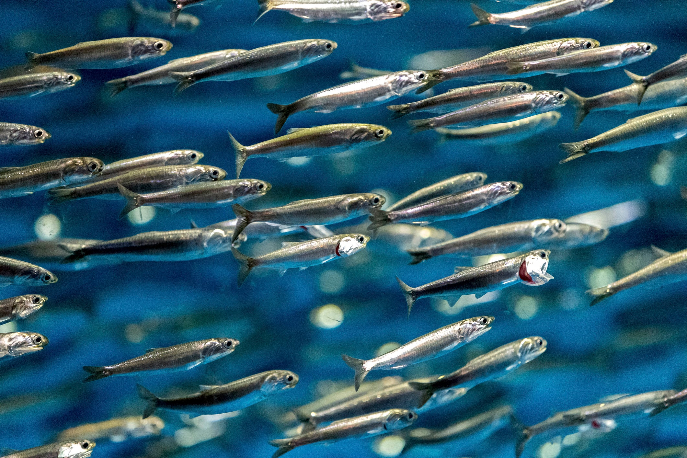Thức ăn: Sinh vật phù du.
Tập tính: Bơi đàn lớn, sinh sản nhanh.
Sinh sản: Đẻ trứng nổi.
Nơi ở: Ven biển, cửa sông.
19. Cá mòi (Sardine)
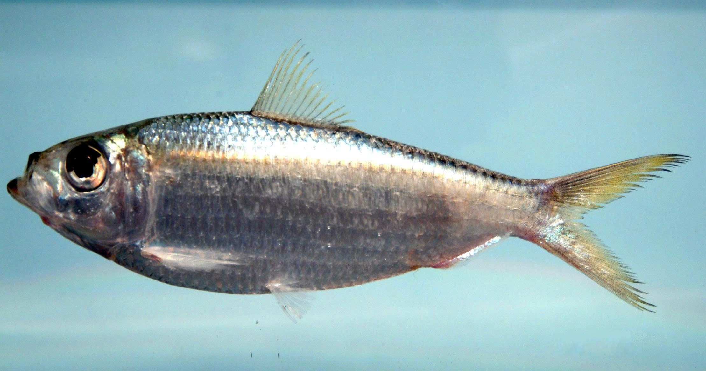Thức ăn: Phù du, sinh vật nhỏ.
Tập tính: Bơi đàn lớn, dễ di cư.
Sinh sản: Đẻ trứng nổi.
Nơi ở: Biển ôn đới, gần bờ.
20. Cá đối (Mullet)
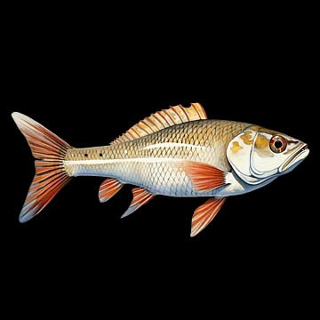Thức ăn: Tảo, mùn bã hữu cơ.
Tập tính: Sống đàn, nhảy trên mặt nước.
Sinh sản: Đẻ trứng ngoài khơi.
Nơi ở: Biển ven bờ, cửa sông.
21. Cá thu ngừ (Bonito)
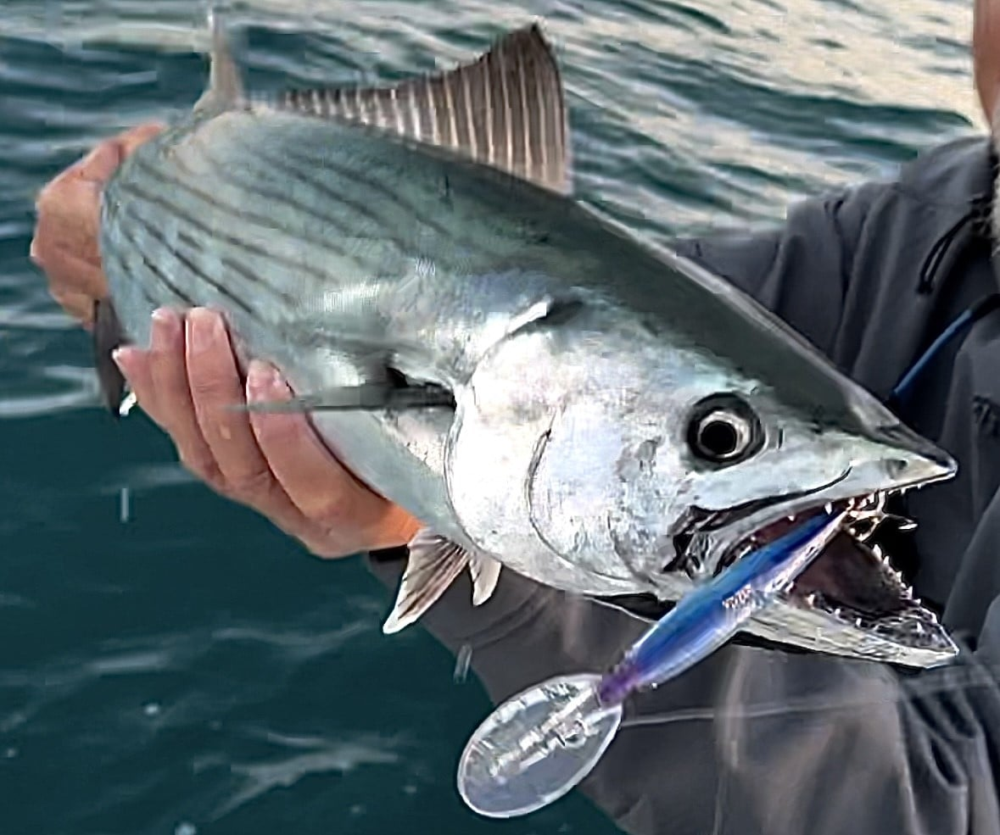Thức ăn: Cá nhỏ, mực, giáp xác.
Tập tính: Bơi nhanh, săn theo đàn nhỏ.
Sinh sản: Đẻ trứng nổi trên mặt nước.
Nơi ở: Đại dương nhiệt đới và ôn đới.
22. Cá mập đầu búa (Hammerhead Shark)

Thức ăn: Cá, mực, động vật đáy.
Tập tính: Săn mồi thông minh, đôi khi đi theo nhóm.
Sinh sản: Đẻ con, mang thai khoảng 1 năm.
Nơi ở: Đại dương vùng nhiệt đới.
23. Cá trích (Herring)

Thức ăn: Sinh vật phù du, ấu trùng tôm cá.
Tập tính: Bơi đàn cực lớn, di cư theo mùa.
Sinh sản: Đẻ trứng dính ở tầng đáy nông.
Nơi ở: Biển ôn đới, Bắc Đại Tây Dương và Bắc Thái Bình Dương.
24. Cá mối (Lizardfish)
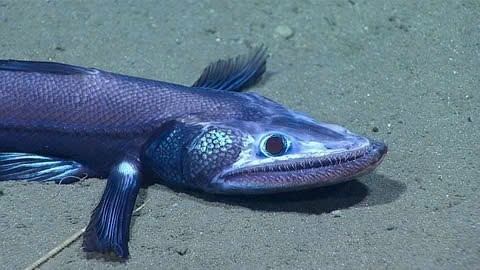Thức ăn: Cá nhỏ, giáp xác.
Tập tính: Nằm phục kích dưới cát, săn nhanh.
Sinh sản: Đẻ trứng nổi tự do.
Nơi ở: Đáy cát vùng biển nông.
25. Cá bò da (Triggerfish)
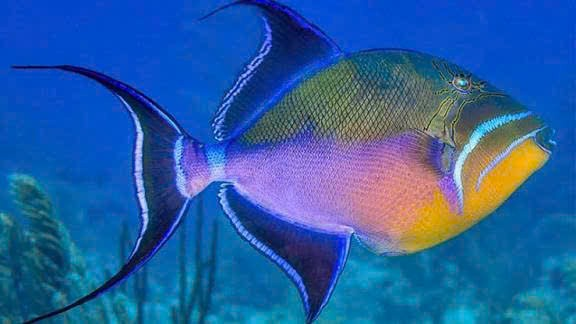Thức ăn: San hô, tôm, ốc, cầu gai.
Tập tính: Tự vệ bằng cách chui vào khe đá.
Sinh sản: Đẻ trứng, trông con cẩn thận.
Nơi ở: Rạn san hô vùng nhiệt đới.
26. Cá hoàng yến (Yellow Tang)
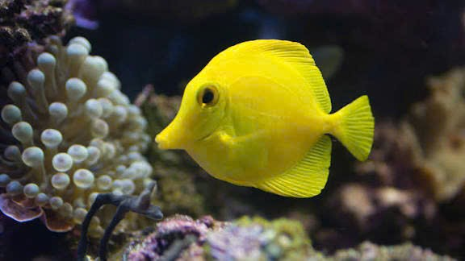Thức ăn: Tảo biển.
Tập tính: Hiền lành, thường sống theo nhóm nhỏ.
Sinh sản: Đẻ trứng ngoài khơi.
Nơi ở: Rạn san hô Hawaii, Thái Bình Dương.
27. Cá đuối điện (Electric Ray)
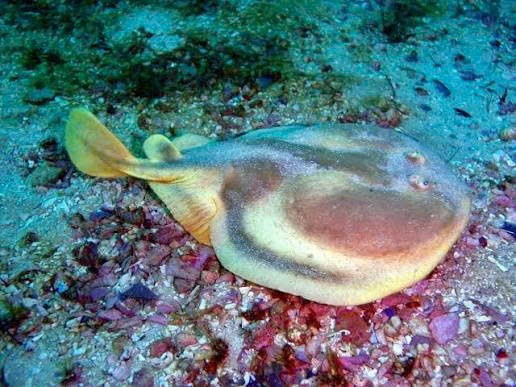Thức ăn: Cá nhỏ, tôm, mực.
Tập tính: Dùng điện để tấn công và phòng thủ.
Sinh sản: Đẻ con.
Nơi ở: Đáy biển cát và bùn.
28. Cá đèn lồng (Lanternfish)
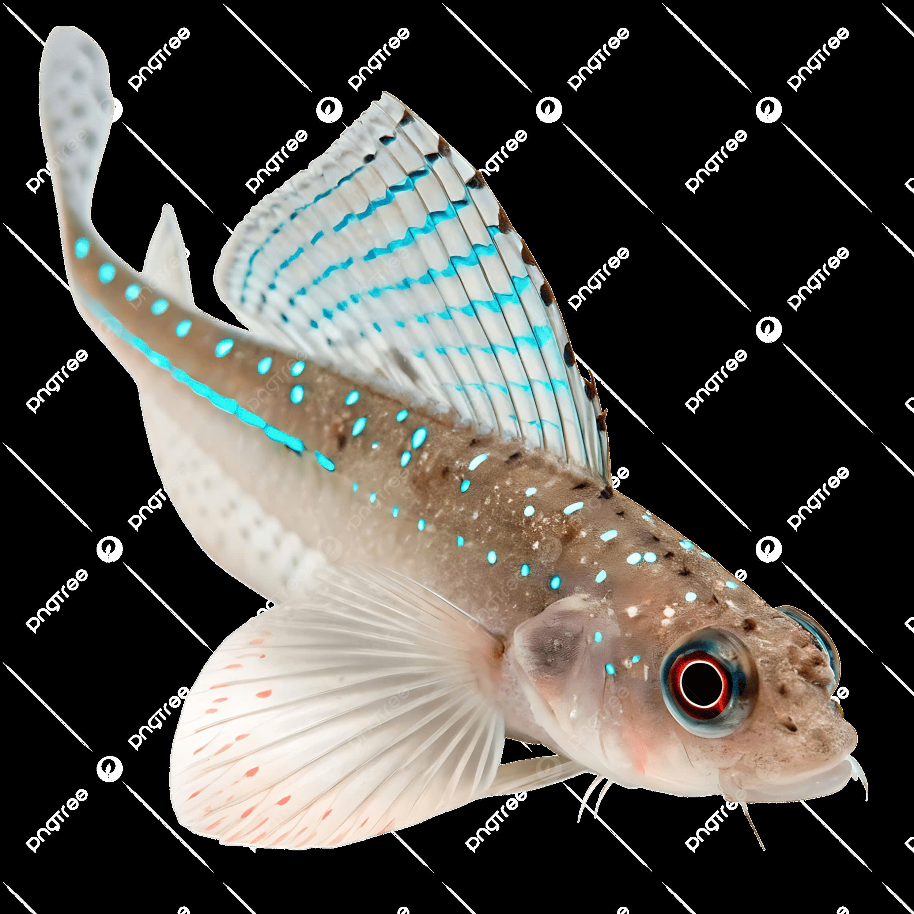Thức ăn: Sinh vật phù du.
Tập tính: Phát sáng, sống tầng sâu.
Sinh sản: Đẻ trứng nổi, nở ở tầng trung.
Nơi ở: Đại dương sâu tối.
29. Cá thu ngựa (Horse Mackerel)
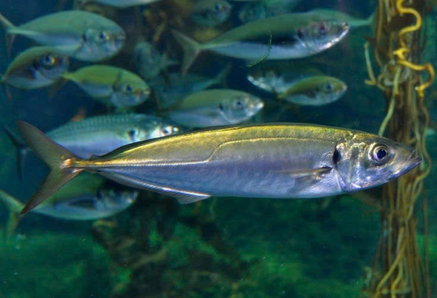Thức ăn: Cá nhỏ, sinh vật nổi.
Tập tính: Di chuyển nhanh, bơi đàn.
Sinh sản: Đẻ trứng nổi xa bờ.
Nơi ở: Biển ấm, vùng ven bờ.
30. Cá kiếm (Swordfish)

Thức ăn: Cá, mực, giáp xác lớn.
Tập tính: Cực nhanh, dùng mỏ kiếm tấn công mồi.
Sinh sản: Đẻ trứng nổi trong vùng ấm.
Nơi ở: Đại dương sâu toàn cầu.
31. Cá tráp biển (Sea Bream)
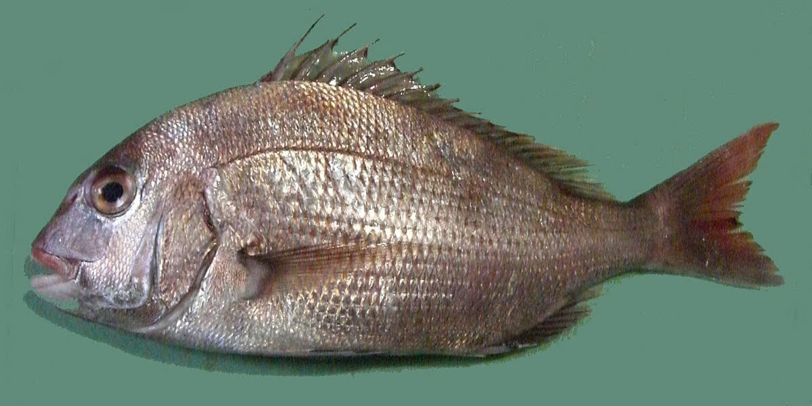Thức ăn: Giáp xác, tảo, nhuyễn thể.
Tập tính: Sống gần bờ, ưa đá và cát.
Sinh sản: Lưỡng tính, đẻ trứng theo mùa.
Nơi ở: Biển Địa Trung Hải, Đại Tây Dương.
32. Cá tuyết (Cod)
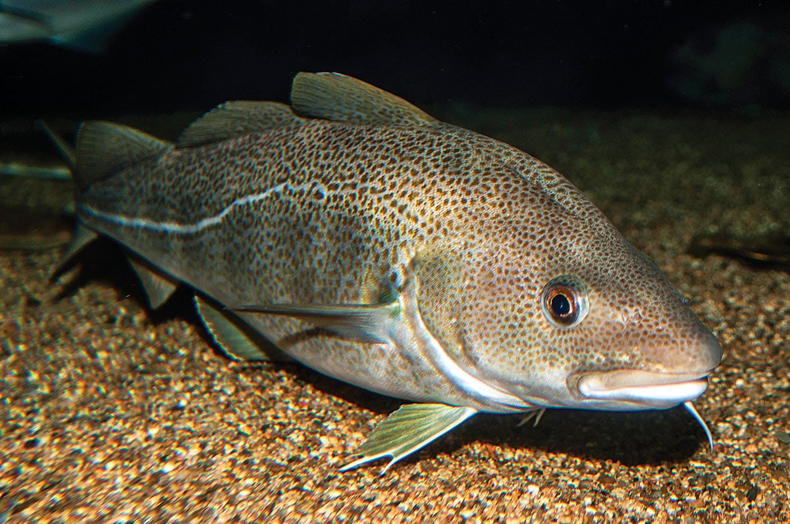Thức ăn: Tôm, cá nhỏ, giáp xác.
Tập tính: Sống tầng đáy, thích nước lạnh.
Sinh sản: Đẻ trứng ở độ sâu lớn.
Nơi ở: Biển Bắc, Bắc Đại Tây Dương.
33. Cá hồi biển (Sea Trout)
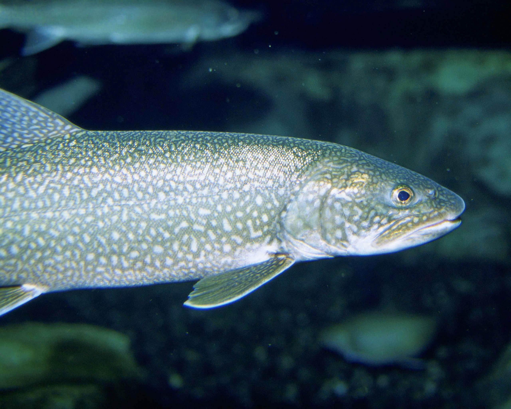Thức ăn: Côn trùng, tôm, cá nhỏ.
Tập tính: Sống xen kẽ giữa nước ngọt và mặn.
Sinh sản: Đẻ trứng trong sông, con quay ra biển.
Nơi ở: Bắc Đại Tây Dương, biển Baltic.
34. Cá chình biển (Conger Eel)
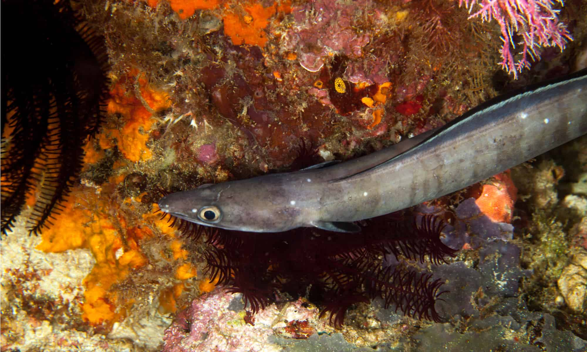Thức ăn: Cá nhỏ, giáp xác, mực.
Tập tính: Sống đáy, săn đêm.
Sinh sản: Đẻ trứng ở đại dương sâu.
Nơi ở: Đại Tây Dương, biển Địa Trung Hải.
35. Cá ngát biển (Marine Catfish)

Thức ăn: Động vật đáy, cá nhỏ.
Tập tính: Sống tầng đáy, di chuyển theo nhóm nhỏ.
Sinh sản: Con đực ngậm trứng trong miệng.
Nơi ở: Biển Ấn Độ Dương và Đông Nam Á.
36. Cá nhồng (Barracuda)
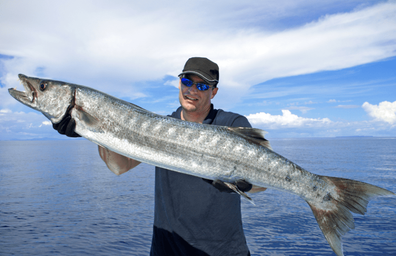Thức ăn: Cá nhỏ, mực.
Tập tính: Săn mồi đơn độc, cực nhanh.
Sinh sản: Đẻ trứng trôi nổi.
Nơi ở: Biển nhiệt đới, gần rạn san hô.
37. Cá mú sao (Coral Grouper)

Thức ăn: Cá nhỏ, tôm.
Tập tính: Sống rạn san hô, ẩn nấp trong hang.
Sinh sản: Đẻ trứng theo mùa.
Nơi ở: Biển Đông Nam Á, Thái Bình Dương.
38. Cá phèn biển (Goatfish)
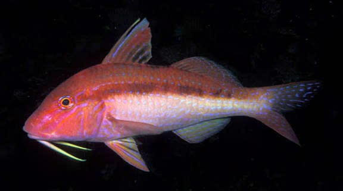Thức ăn: Giáp xác nhỏ, giun biển.
Tập tính: Tìm mồi bằng râu cảm giác.
Sinh sản: Đẻ trứng nổi theo mùa.
Nơi ở: Biển Ấn Độ Dương và Thái Bình Dương.
39. Cá đuối gai độc (Thornback Ray)
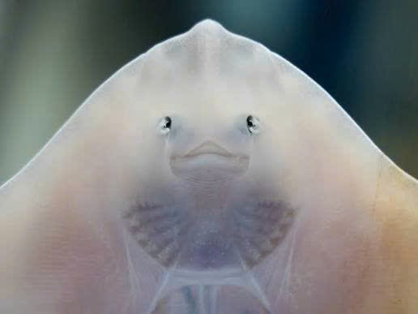Thức ăn: Cua, tôm, cá nhỏ.
Tập tính: Sống đáy, có gai cứng trên lưng.
Sinh sản: Đẻ trứng dạng túi.
Nơi ở: Đại Tây Dương, biển Bắc.
40. Cá đuối manta (Manta Ray)
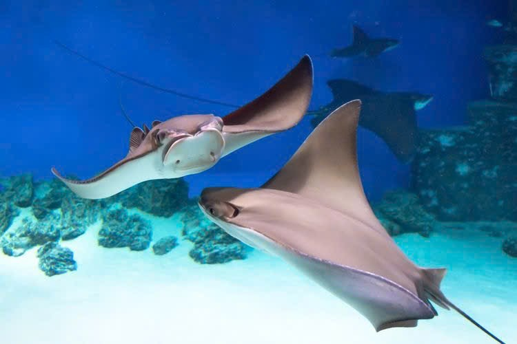Thức ăn: Sinh vật phù du, tôm nhỏ.
Tập tính: Hiền lành, bơi lượn uyển chuyển.
Sinh sản: Đẻ con, 1–2 con mỗi lần.
Nơi ở: Đại dương nhiệt đới và cận nhiệt đới.